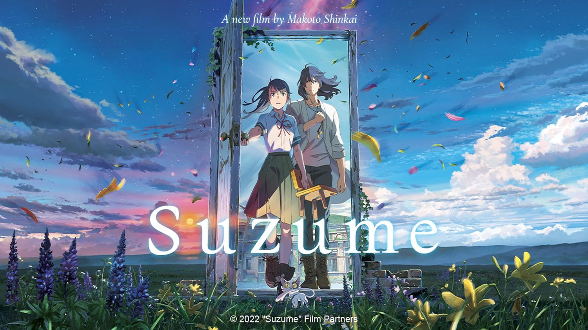

Guia dos Melhores Filmes

Suzume
Discrição
Uma história moderna de ação e aventura onde uma garota de 17 anos chamada Suzume ajuda um jovem misterioso a fechar as portas do outro lado que estão causando desastres por todo o Japão.
Prêmios
- Festival Internacional de Berlim 2023 – Bronze de Ouro da Critical Success para Suzume (competição de ficção científica e fantasia).
- Brussels International Festival of Fantasy Film (BIFFF) 2023 – Silver Raven International Competition (em empate com Infinity Pool de Brandon Cronenberg).
- Critics Choice Awards 2023 – International Animation Award (Makoto Shinkai).
Outros filmes
Suzume -
O Castelo Animado -
Your Name